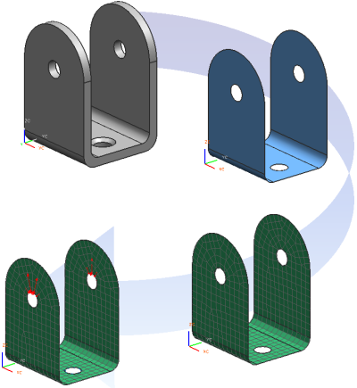

为了支持并行工程及数据重用，高级仿真将把 CAE 模型数据存储在四个独立但是相关的文件中：
仿真文件(.sim)是一个包含 FEM 组件的 NX 装配，边界条件以及解算方案都将储存在仿真文件中
FEM 文件(.fem)充当仿真文件的主模型。节点、单元以及物理和材料属性都将储存在有限元方法文件中，一般来说，FEM 文件中也包含从关联的理想化部件文件中衍生出的多边形几何体
主模型部件是理想化部件的一个组件，必须在使用理想化工具修改几何体前提升或者使用 WAVE 链接理想化部件，所有修改都将储存在理想化部件文件中，并保持原始的主模型几何体不变。
|

|
要获取关于仿真文件类型的相信信息，包括装配关系、文件关联性、在各个文件储存的数据类型，参见高级仿真在线帮助中的高级仿真文件。
要获取关于仿真文件管理的信息以及最佳训练，参见高级仿真在线帮助中的数据管理→高级仿真文件管理。